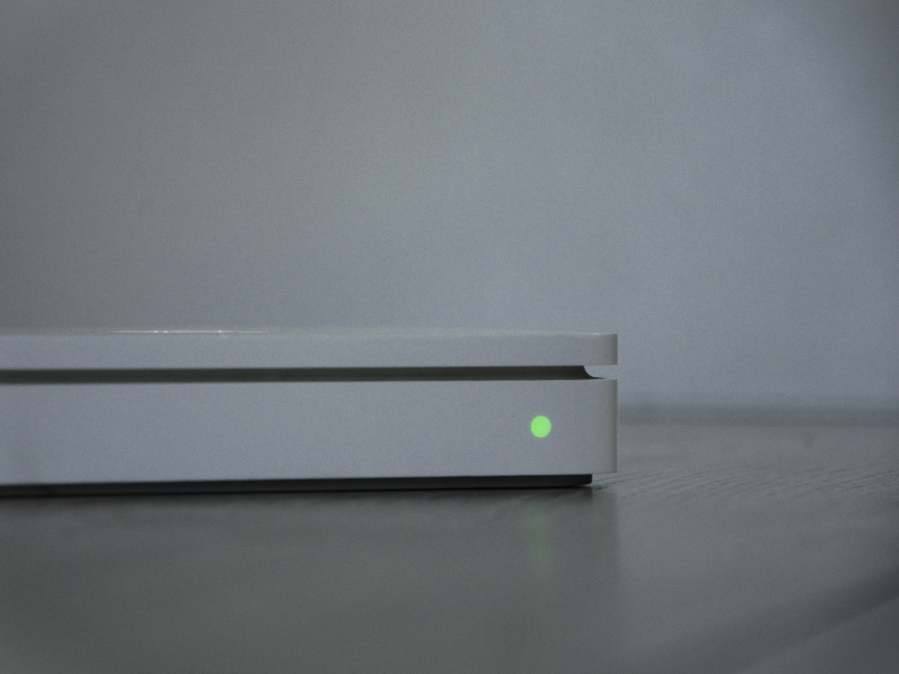
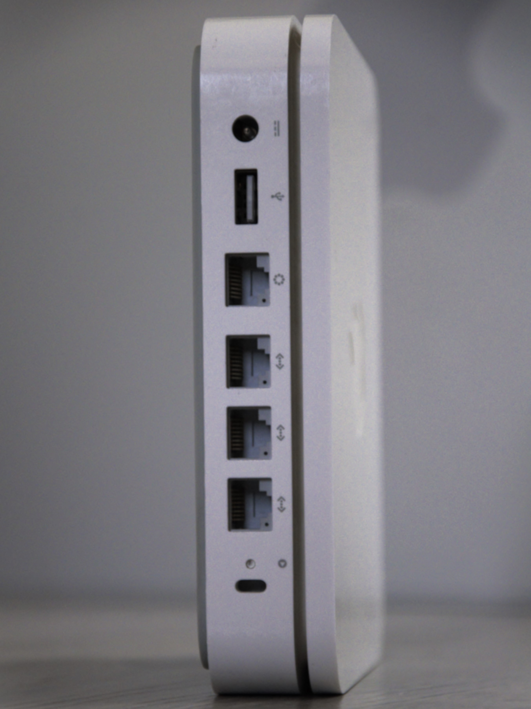
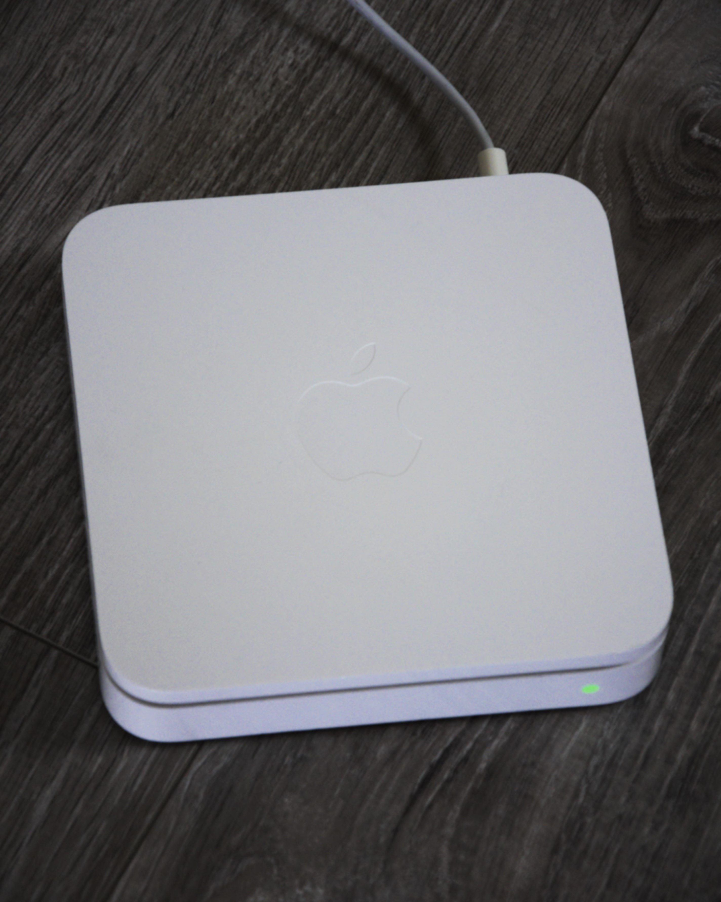
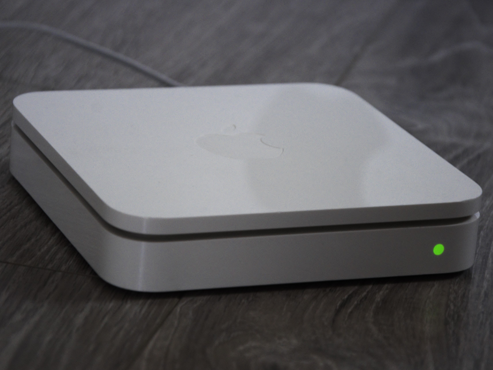
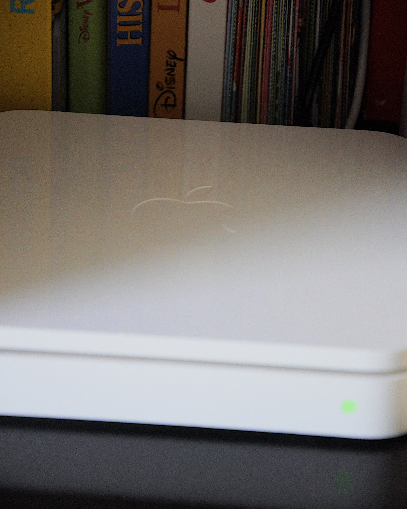

Airport Extreme 1st Gen
1 of July 2025 - Gamerabbit

The Apple Airport Extreme 802.11n 1st generation came out on January 7 of 2007.

It is packed with :
The frequencies it supports are 2.4 GHz and 5 GHz, with Wi-Fi 802.11a/b/g/draft-n. You might wonder why it supports Wi-Fi 802.11n even though the standard was officially released in 2009. This Wi-Fi standard, also called Wi-Fi 4, had been in development since 2003, so this device actually supports the 802.11 draft-n version; the official release by the IEEE only came out in September 2009.

I also got it from LeBoncoin (French Facebook Marketplace) for 5 euros

It's been a few days, and I got disappointed. Maybe it has that nice integration with iOS which I love, but I wanted to use it to extend my Wi-Fi. Unfortunately, it can only do this if the main router is also an Airport, which isn't my case. I then tried using Time Capsule to make backups for my Macs. After reading more, I found out that only the 2nd Gen Airport Extreme can do this, not mine which is the 1st Gen.
I ended up using it with a disk drive and put movies on it, which I can only access from macOS, because I tried multiple times on Windows but never succeeded. (PS: Now I can acces it from my Windows 10 computer)

But for the price I got it, it is still a nice piece of tech for my collection !